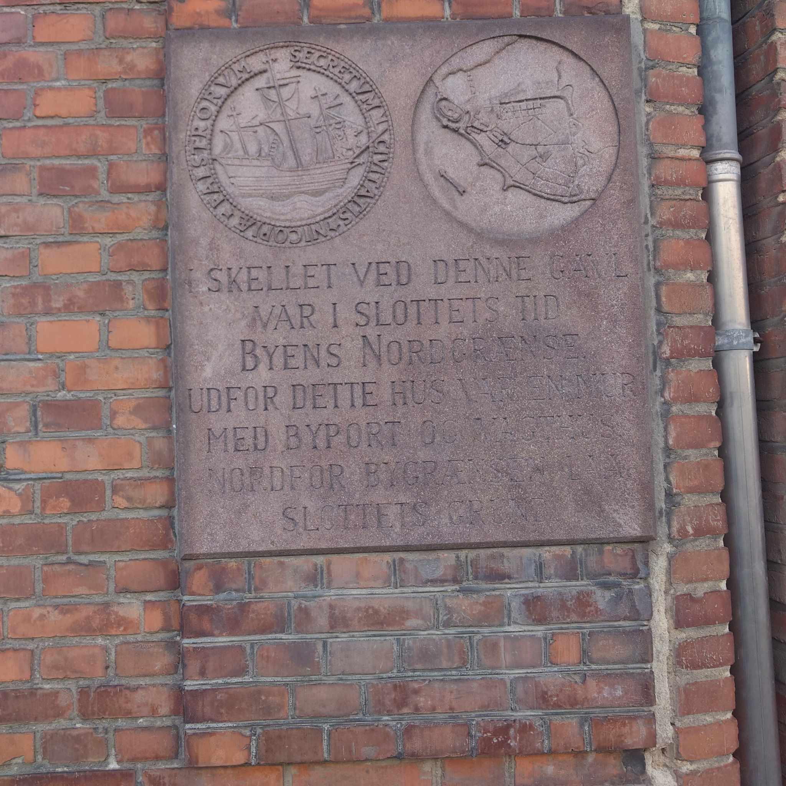

<!DOCTYPE html>
<html lang="en">
<head>
    <meta charset="UTF-8">
    <title>Title</title>
    <link rel="stylesheet" href="css.css">
</head>
<body>

</body>
</html><!DOCTYPE html>
<html lang="da">
<head>
    <meta charset="utf-8">

    <title>FindWay</title>

    <meta name="robots" content="All">
    <meta name="author" content="Udgiver">
    <meta name="copyright" content="Information om copyright">
    <link href="css/styles.css" rel="stylesheet" type="text/css">
    <meta name="viewport" content="width=device-width, initial-scale=1">
    <script src="JS.js"></script>

</head>
<body>

<header class="elegant-header">
    <div class="container">
        <div class="row">
            <div class="col-12 text-center">
                <a href="index.html">
                    
                </a>
            </div>
        </div>
    </div>
</header>
<br>
<div class="image-container text-center">
    
</div>

<div class="container">
    <div id="vandtaarn-header">
        <h1 class="text-center mt-3">Porten</h1>
    </div>
    <div class="header d-flex align-items-center">
        <div class="vandtaarn-text">
            <button id="speakButton">Leer en voz alta en español</button>
            <p id="textToRead">Porten- Sølvkammeret og Byens Gamle Grænse
                <br><br>
                I det gamle kvarter, hvor fortidens skygger strejfer de nutidige fortove, findes en mur, der bærer på en besked fra en anden æra.
                <br><br>
                På en robust plakette af sten, hvis bogstaver er slidt af vind og vejr, står der ord, der formidler et kapitel af byens historie, som ellers ville have været glemt.
                <br><br>
                Inskriptionen lyder: "Sølvkammeret. Skellet ved denne gade var i slottets tid byens nordgrænse."
                <br><br>
                Udfor dette hus gik en vej, flankeret af en mægtig byport og videre mod nord, bort fra slottets beskyttende mure.
                <br><br>
                Dette var ikke blot en markering af territorial afgrænsning, men et symbol på overgangen fra byens pulserende hjerte til de rolige oplande.
                <br><br>
                Ordet 'Sølvkammeret' vækker nysgerrighed; det antyder, at der her lå en vigtig institution, måske en del af det nu forsvundne slot.
                <br><br>
                Et sted hvor værdier blev opbevaret, eller måske endda et sted for handel og veksling, der definerede byens geografiske og administrative ende under slottets styre.
            </p>
        </div>
    </div>
</div>


<br>
<br>
<div class="container">
    <div class="row">
        <div class="col-12 text-center">
            <a href="index.html">
                <iframe src="https://www.google.com/maps/embed?pb=!1m18!1m12!1m3!1d575.402389291418!2d11.865744528586776!3d54.769250071933094!2m3!1f0!2f0!3f0!3m2!1i1024!2i768!4f13.1!3m3!1m2!1s0x47ad30f8f89b4d21%3A0xcbd3e2cd9b18c635!2sSlotsgade%2015%2C%204800%20Nyk%C3%B8bing%20Falster!5e0!3m2!1sda!2sdk!4v1712237324572!5m2!1sda!2sdk" width="400" height="200" style="border:0;" allowfullscreen="" loading="lazy" referrerpolicy="no-referrer-when-downgrade"></iframe>            </a>
        </div>
    </div>
</div>
<script>
    // JavaScript-koden for oplæsning
    function toggleReading() {
        // Tjekker om der er nogen tale i gang
        if (!window.speechSynthesis.speaking) {
            // Starter oplæsningen, hvis ingen tale er i gang
            const text = document.querySelector('#textToRead').innerText;
            const speech = new SpeechSynthesisUtterance(text);
            speech.lang = 'da-DK'; // Rettelse til korrekt sprogkode for dansk
            window.speechSynthesis.speak(speech);
            document.querySelector('#speakButton').textContent = 'Stop';
        } else {
            // Stopper oplæsningen, hvis den er i gang
            window.speechSynthesis.cancel();
            document.querySelector('#speakButton').textContent = 'Læs højt på dansk';
        }
    }

    // Tilføjer event listeners når DOM'en er fuldt indlæst
    document.addEventListener('DOMContentLoaded', function () {
        const speakButton = document.querySelector('#speakButton');
        speakButton.addEventListener('click', toggleReading);
        // Sætter knappens starttekst baseret på om der allerede er en oplæsning i gang
        speakButton.textContent = window.speechSynthesis.speaking ? 'Stop' : 'Læs højt på dansk';
        styleButton(); // Anvender stilændringer
    });

    // Stopper oplæsningen automatisk, når siden forlades eller opdateres
    window.addEventListener('beforeunload', function () {
        if (window.speechSynthesis.speaking) {
            window.speechSynthesis.cancel();
        }
    });

    function styleButton() {
        const button = document.querySelector('#speakButton');
        button.style.backgroundColor = 'red';
        button.style.color = 'white';
        button.style.fontSize = '10px';
        button.style.padding = '10px 20px';
    }
</script>


<script src="node_modules/bootstrap/dist/js/bootstrap.bundle.min.js"></script>
</body>
</html>
